Thinking about getting your first rabbit? I had the same questions as you! Follow this guide to prepare yourself to give your new bunny the best life possible. Hover over my rabbits to learn their names!
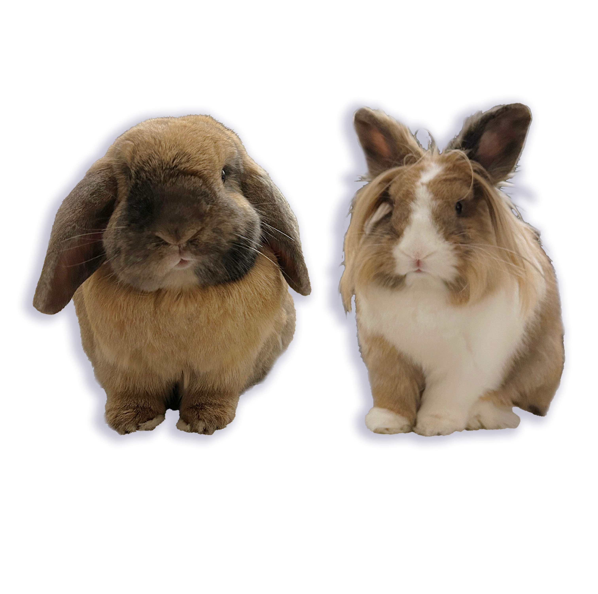
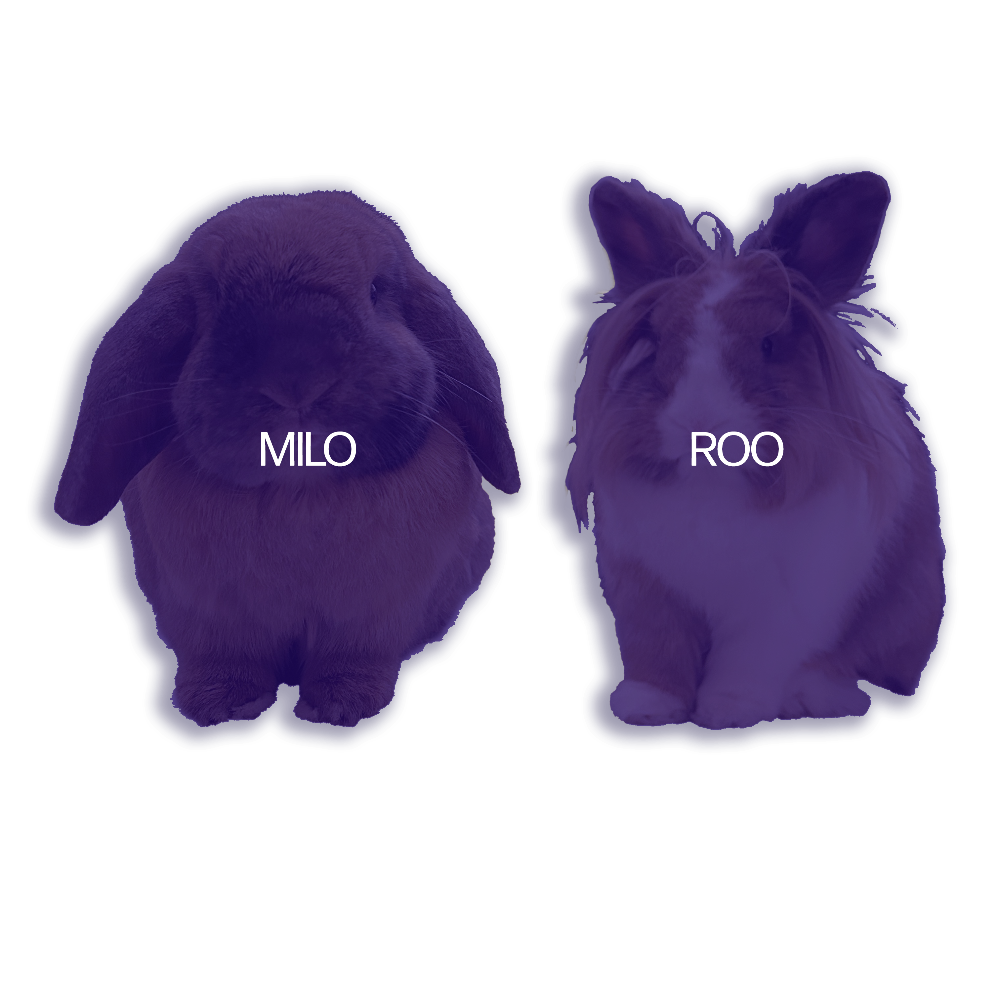
Rabbits are wonderful pets, but they require more care and attention than many people expect. Before bringing a rabbit home, make sure you understand what they need to live a happy and healthy life.
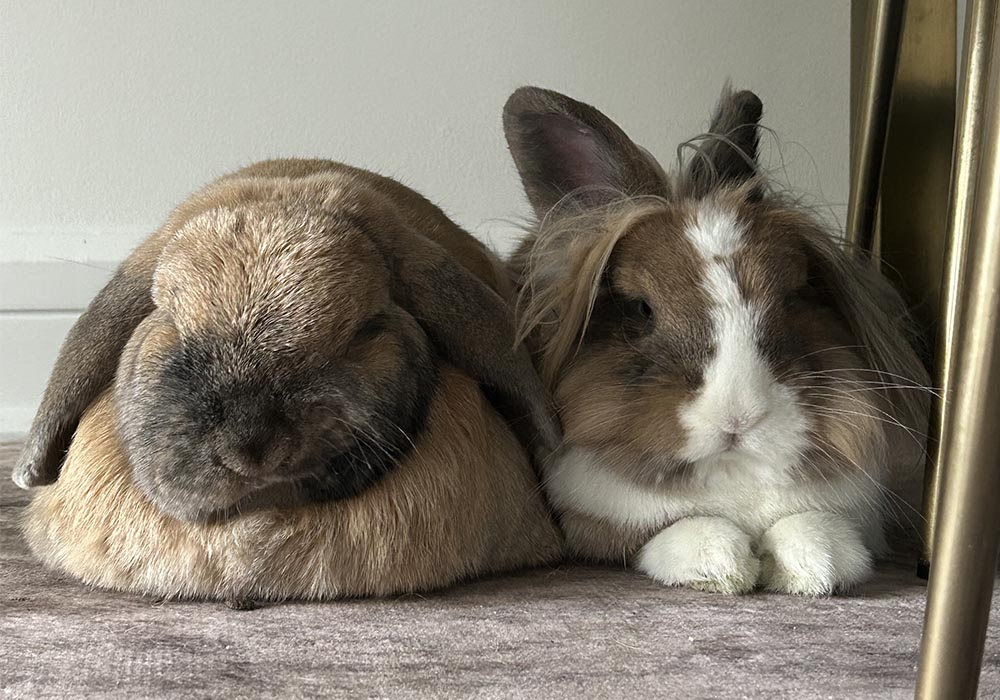
Before bringing your rabbit home, make sure you have everything they need for a safe and comfortable living space.
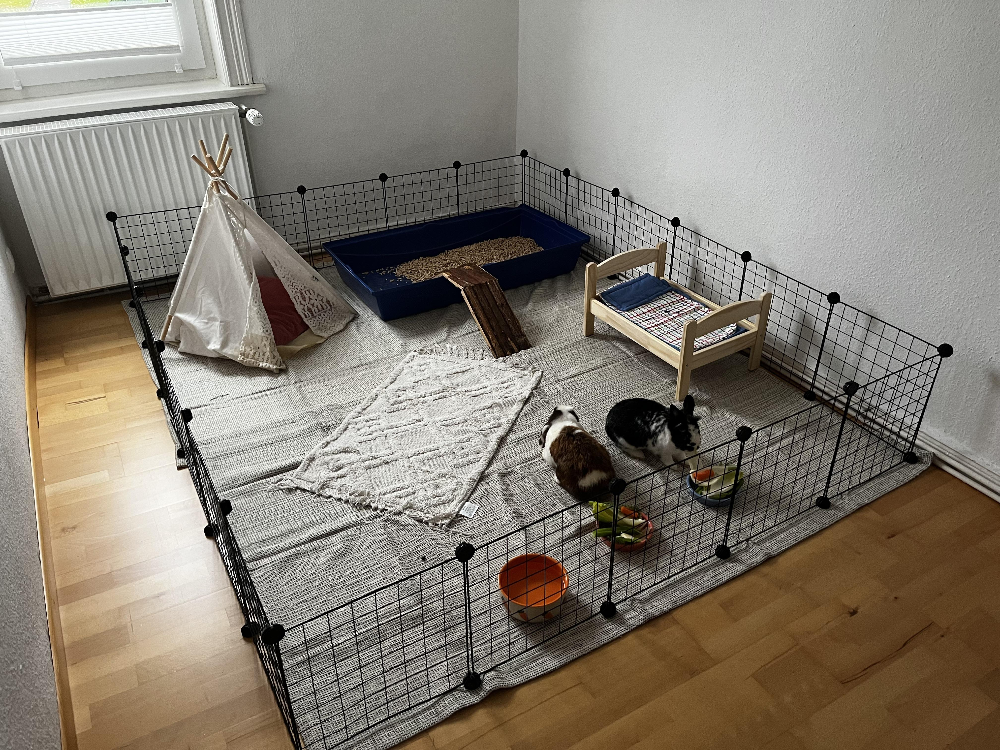
A large, safe area where your rabbit can eat, sleep, and move around.
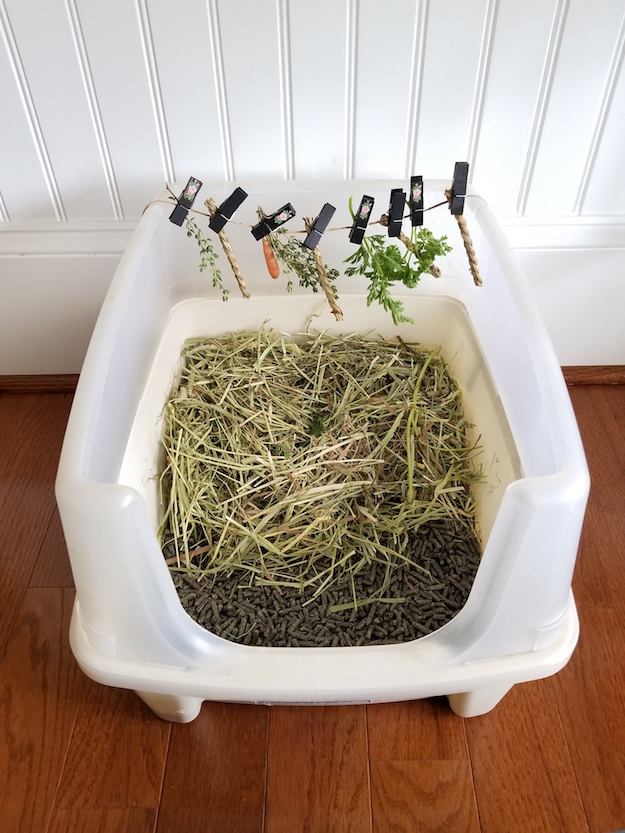
A litter box gives your rabbit a designated place to use the bathroom.
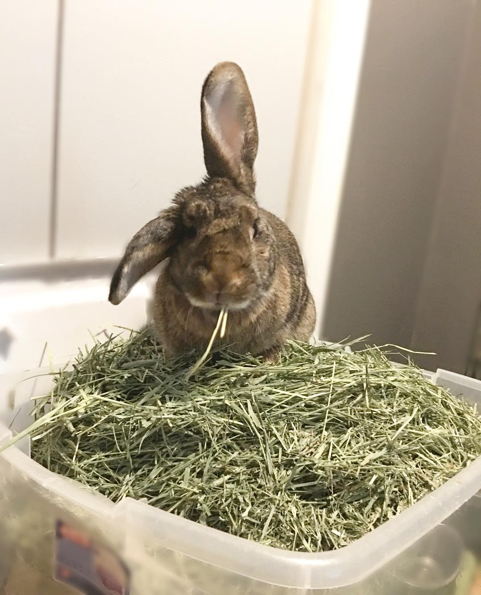
Fresh hay should always be available for your rabbit.
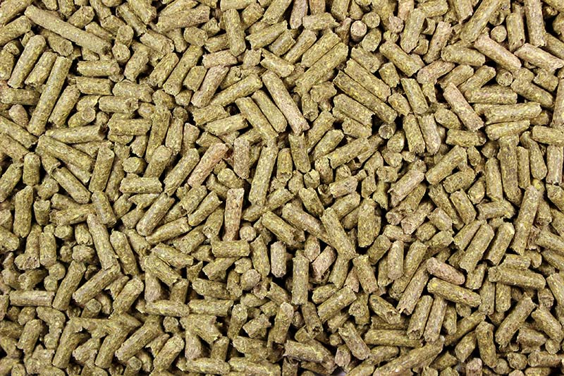
Your rabbit needs fresh leafy greens and a small amount of pellets.
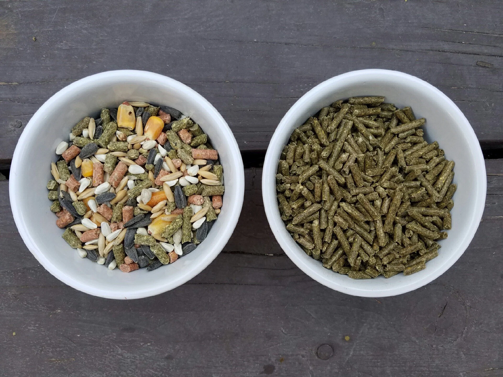
Provide your rabbit with clean water and dishes for their food.
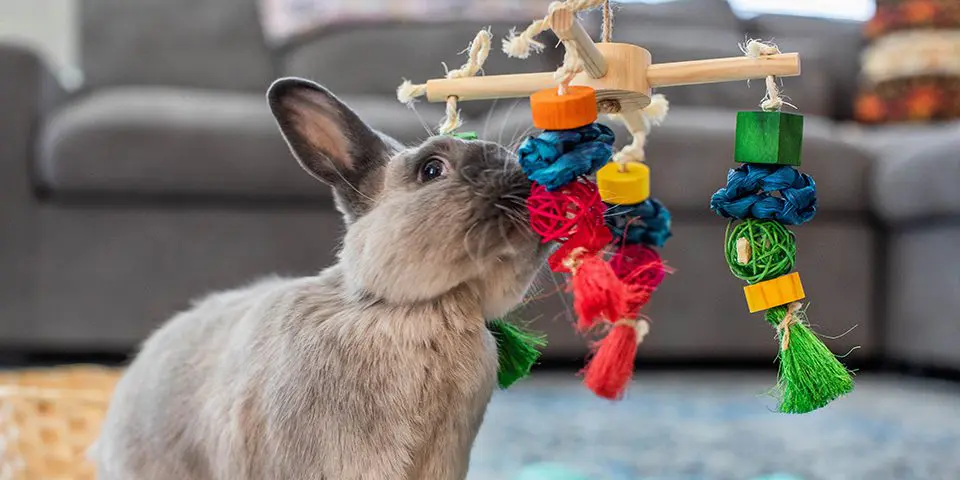
Toys give rabbits something to play with, chew, and explore.
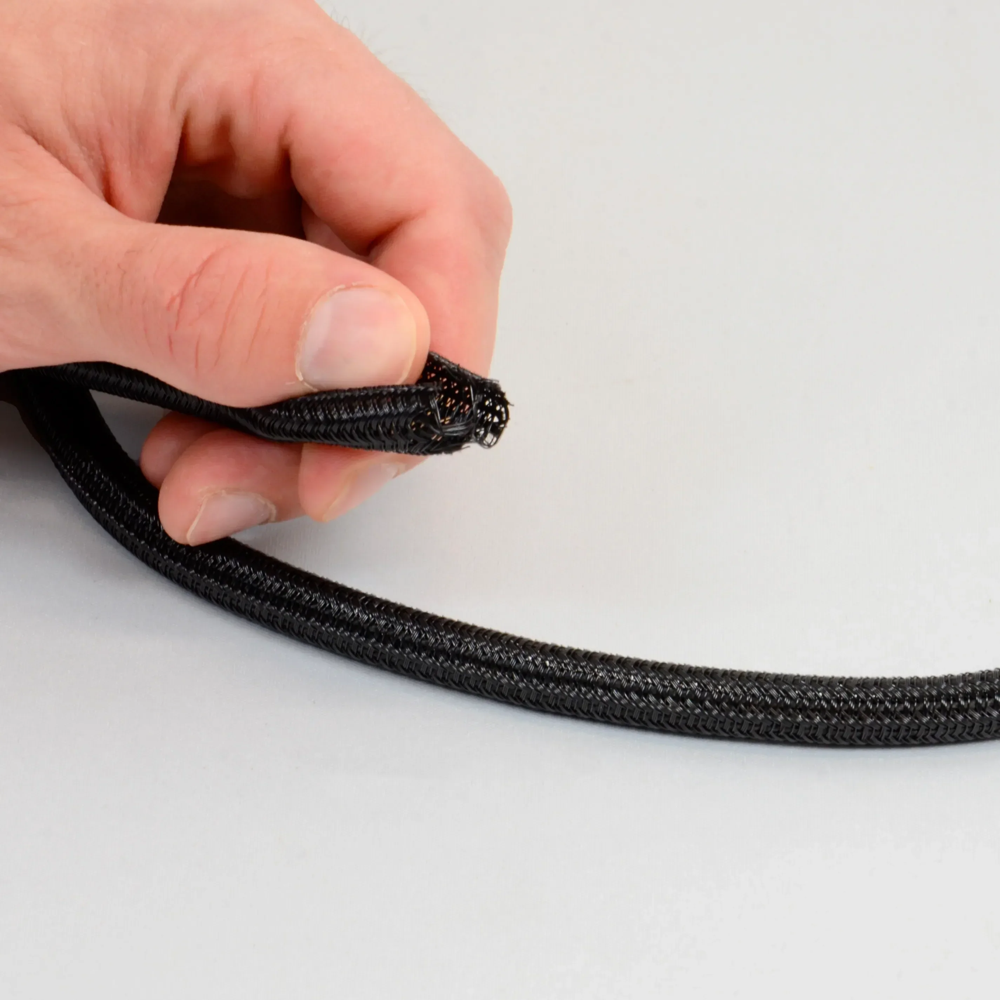
Rabbit-Proof electrical cords because rabbits may try to chew them.
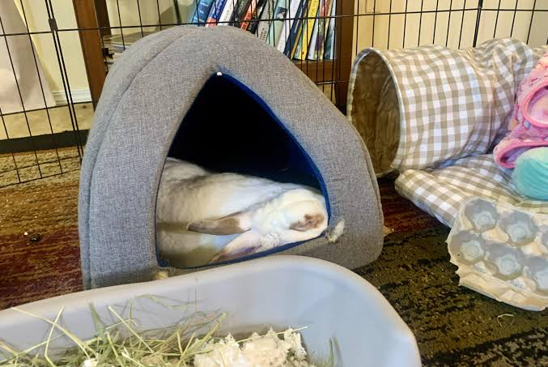
A hiding spot gives your rabbit a quiet and safe place to relax.
| EVERY DAY | SOMETIMES | RARE | NEVER |
|---|---|---|---|
|
Hay Romaine Lettuce Green/Red Leaf Lettuce Cilantro Basil Parsley Arugula Bok Choy Dandelion Greens Pellets (small amounts) Fresh Water |
Carrots Bell Peppers Broccoli Cucumber Zucchini Strawberries Blueberries Raspberries Apple (no seeds) Pear (no seeds) |
Banana Dried Fruit Oats Store-Bought Treats |
Chocolate Candy Bread Crackers Cereal Cookies Chips Avocado Onions/Garlic Leeks Potatoes Rhubarb Meat & Milk Alcohol Caffeine Xylitol |
EVERY DAY: Rabbit needs these to survive!
SOMETIMES: Good, but often high in sugar or other things rabbits don't need.
RARE: These should only be given as an occasional treat!
NEVER: Eating these can harm your rabbit.
Make sure your rabbit has unlimited fresh hay and clean water available throughout the day.
Provide fresh leafy greens and the appropriate amount of pellets.
Remove poop and add fresh litter as needed.
Let your rabbit have many hours of (supervised) time to run, hop, explore, and play outside of their enclosure.
Spend some time sitting with your rabbit, petting them, or letting them come to you.
Make sure they're eating, drinking, pooping, and behaving normally. Look for anything unusual like sitting hunched over, not eating, or acting unusually quiet.
Pick up old food, clean up messes, and make sure their living area is safe and comfortable.
Have many toys, provide cardboard to chew, or hide treats in a forage toy to keep them mentally stimulated.
Click on each behavior to learn what it means!
Any more questions? Ask below and we will get back to you!